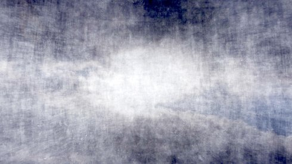

Memento Stella

Takashi Makino
|
JP,
HK 2018
|
Samstag 12 okt | 22.30 | Werkstattkino
Die Wortschöpfung „Memento Stella“ ist für den renommierten
Experimentalkünstler Takashi Makino ein Ausdruck für die Flüchtigkeit menschlicher Existenz. Zugleich steht sie für ein Bild, das uns Menschen miteinander verbindet. Der Titel von Makinos neuem Werk könnte somit emblematisch für die poetische Flüchtigkeit der Bilder als auch für die außerordentliche, kollektive Kinoerfahrung, die seine Filme bieten, stehen. MEMENTO STELLA schafft rauschhafte, enigmatische Bild-Musik-Verbindungen, die noch lange nachwirken und persönliche Erinnerungen wachrufen. (Nippon Connection)
Objekte, Naturphänomene, Menschen und Städte verschmelzen in Takashis Arbeiten zu wahrhaft rauschhaften filmischen Exzessen, die aufgrund zigfacher Schichtung und Mehrfachbelichtung vom konkreten Bild zum abstrakten Gemälde mutieren und die Leinwand verschwinden lassen. (Bernd Brehmer)
Takashi Makino geb. 1978 in Tokio. Nach seinem Studium am Department of Cinema des Nihon University College of Art arbeitete er 2001 im Studio der Quay Brothers in London und bis 2011 als freischaffender Filmkolorist. Zur Zeit lebt und arbeitet er in Yokohama. Takashi arbeitet mit einer Vielzahl von Musikern zusammen, u.a. mit Jim O’Rourke, Simon Fisher Turner und Yoshihide Otomoto. 2013 war Takashi Artist in Focus von UNDERDOX. |
Filme Ghost of OT301 2014 | cinéma concret 2015 | Origin of the Dreams 2016 | The Picture From Darkness 2016 | On Generation and Corruption 2017 (12. UX) | Memento Stella 2018 |